| 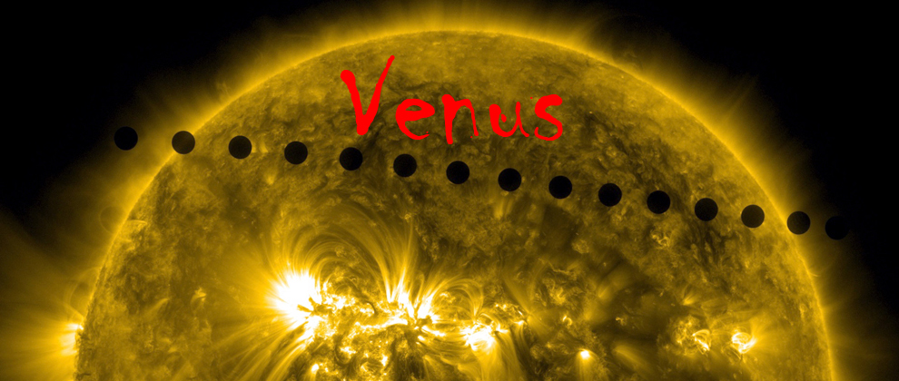 |
Venus, the planet named after the Roman goddess of love and beauty. Ineptly named, this planet holds many things... but love and beauty are neither of them. Holding orbit as the second planet from the Sun, Venus is the hostile twin of Earth. Much is still unknown about the surface of Venus due to its extreme atmosphere. It is so hot, so dense, and so poisonous that sending probes is difficult and sending humans would be deadly. Here on Earth, we know Venus as the Morning Star or the Evening Star as it shines brighter than any other object except the Sun and Moon just before dusk or dawn (depending on the time of year). The image above shows Venus as it transit the sun in 2012. The last time such a thing will happen until 2117. |
Sister planet you say? |
| 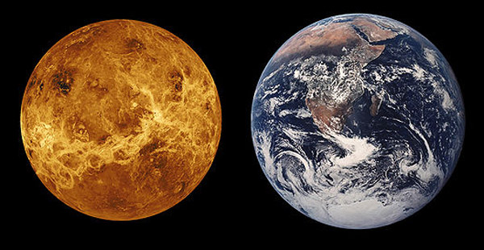 |
Looking at the above picture, you can see why people call Venus our sister planet, but the size is the only comparable feature to Earth as the surface, atmosphere, and elemental compositions are not. Its radius is about 6,051 Km as compared to Earth's radius of 6,371 Km. This seemingly small difference in radius (also with a slightly lower mean density) gives Venus' mass of only 81% of Earth's and 90% of Earth's gravitational pull. |
What an atmosphere!!! |
|
What an atmosphere indeed! We're talking about an atmosphere that has nearly 93 times (93 Bar vs. 1 bar or 0.987 ATM) the pressure of Earth's atmosphere at sea level!!! That's roughly equivalent to diving 3100 feet into the ocean! Not only is this atmosphere extremely dense, it is extremely hot. Venus' average temperature is 867° F, this can melt Lead, Zinc and some low melting point Aluminum alloys! The temperature alone makes it difficult to send probes and robots to Venus. Want to send a human there? Well, even if you could withstand the temperature and the pressure, the atmosphere is poisonous! It comprises of mostly Carbon Dioxide (~96%) with smaller amounts of Nitrogen, Sulfur Dioxide, Sulfuric Acid, Carbon Monoxide, Hydrogen Chloride and Hydrogen Fluoride. This planet even rains sulfuric acid! The above aspects of the atmosphere makes it impossible to see the surface of Venus from Earth in optical wavelengths. Its cloud cover makes it completely opaque to our eyes. Scientists use radar, UV, and infrared wavelengths to probe into and through the atmosphere. They've also used the same method astronomers use to probe the atmospheric compositions of distant planets. When Venus transits the sun, they take a spectra, or in other words they look at the light that's being absorbed and passed through Venus' atmosphere. This light shows the absorption lines of the gasses and can tell scientists exactly what is there. Also, in the 1970's, Russia sent a robotic lander to Venus... It only lasted minutes, but the data received helped to further the study of Venus immensely. Below are images of what Venus' atmosphere looks like in visible and infrared wavelengths. |
|
| 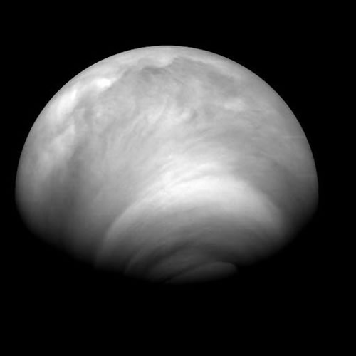 | 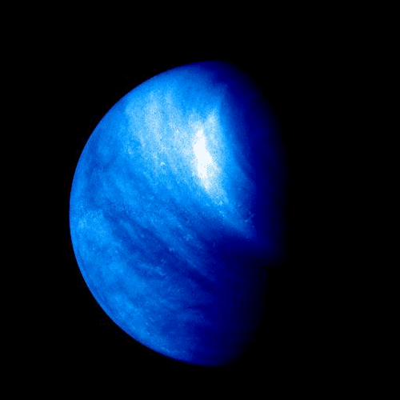 |
Wait, there's more to this story... although Venus rotates extremely slow, its atmosphere blows around the planet at speeds in excess of 400 mph! It's so fast, that it is thought that this may be the cause of giant vortices on the north and south poles. The winds are more than likely caused by the temperature differences in the different layers and hemispheres of the planet, somewhat similar to those on Earth, but since there are no giant oceans of water and landmasses to slow the winds, they can move much faster. The images below showed scientists that these vertices are not only a lasting feature, but are also constantly changing. |
|
| 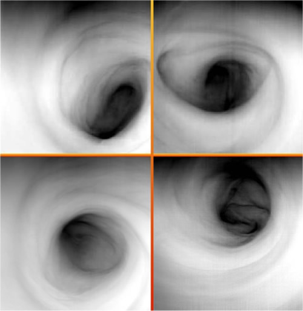 | 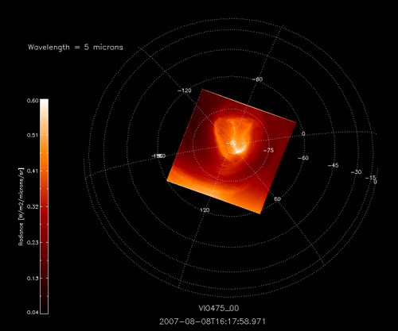 |
No Magnetic Field? |
|
Yes, that's mostly right, Venus has no planetary wide magnetic field, but it does have a magnetic field caused by the interaction of the solar wind and the ionosphere. It is thought that planetary magnetic fields are caused by a dynamo effect inside of a planet. An effect caused by the rotation of the core. There may be a few reasons for the lack of the dynamo effect on Venus. One reason is the core may have slowly spun down and the core and mantle have cooled to a point that it no longer induces a magnetic field. Also, some theorize that the spin rate of a planet may have an effect on the dynamo and since Venus only rotates once every 243 days, it may not be fast enough to create the dynamo. Interestingly, it does rotates in retrograde (against the spin of the other planets and its orbit around the sun). This may not be the case though, as some theories of the dynamo process indicate that the material moves around the core due to thermal processes and not a rotation of the planet. Yet another theory suggests that the planet may not have the necessary chemical and elemental compositions or physical properties to create a solid core. The magnetic field that is present on Venus is caused by the interaction of the solar wind and the ionosphere. As the solar wind flows past the planet, the particles within the solar wind ionize the gasses in the upper atmosphere. These ionized gasses are now charged and can induce a weak magnetic field through the motions of the gas and wind around the planet. The field can change strength as the solar wind changes and as the atmosphere below moves the gas around. Scientists noticed that strange occurrences in the magnetic field take place. "Ropes" of magnetic fields are created in the northern and souther poles of the planet. The weak magnetic ropes appear to flow charged particles from one end to another. No current theory is sufficient to explain the creation of the "ropes". Occasionally, the magnetic filed lines and ropes can break and reconnect. This can cause an influx of charged particles in the upper atmosphere of Venus and, in turn, creates auroras. This is a similar process that occurs on Earth to create the impressive auroras we see. The image below is a computer simulation of what the magnetic ropes could look like and how they could interact. | |
| 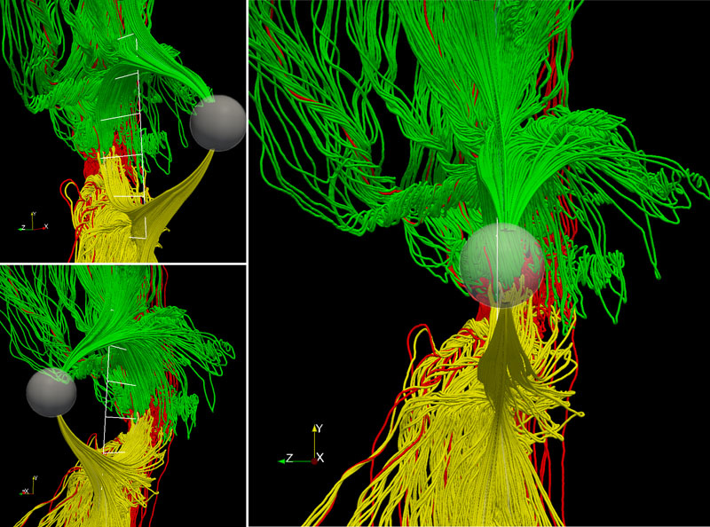 | |
The image below shows what the ionosphere looks like when interacting with the solar wind. Depending on the strength of the solar wind and the ionization of the gas in the ionosphere, it creates a tear-drop shape. |

The Rotational Weirdness And The Orbit |
|
Venus has a strange rotation... why? It is retrograde! This means it rotates backwards in relation to the rest of the planets and with respect to its orbit. It also rotates very, very slowly. One rotation of the planet is equal to 243 days. Why does it rotate like this? Currently, we think it could have been caused by a collision with another protoplanetary object during the formation of the solar system. This could potentially be the reason why it has no moon. The other object may have collided and then all the remaining material might have been captured and assimilated by Venus. Similar to what astronomers think happened with Earth, but our moon escaped the capture. The orbit of Venus is known to have the least eccentric orbit in our solar system. Its eccentricity is only 0.007 whereas Earth's is 0.017. This means that Venus' orbital distance changes only by 0.01 AU (929,000 miles) which is only about 1/4 of the distance Earth varies around the sun. Neptune comes a close second with an eccentricity of 0.009.  |
So, what does the surface look like? |
|
Well, we don't have a lot of photographs of the planets surface. We only have a few from the Soviet Vanera landers of the surface and pictures of the planet using radar and temperature probes. Yet, despite the lack of imagery, we have a good idea of what it looks like. We're not entirely sure though whether or not volcanism is currently taking place. There are signs of it due to the replenishment of sulfur dioxide in the atmosphere, which otherwise would have otherwise diminished. Much of the surface of Venus has been sculpted by volcanism. There is an estimated 1600 volcanoes on the planet and only recently has anybody seen hints of possible activity. It is thought many of them are extinct. Much of the planets surface is covered in volcanic lava plains containing volcanic basalt. Check out the Venus flyby animation by NASA below. The below images were taken by the Soviet landers, NASA and the ESA. |
|
| 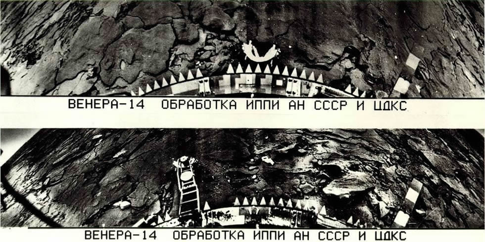 | |
| 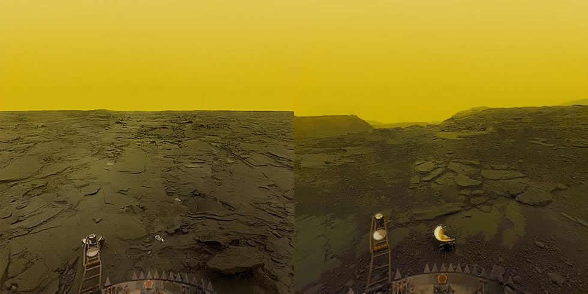 | |
| 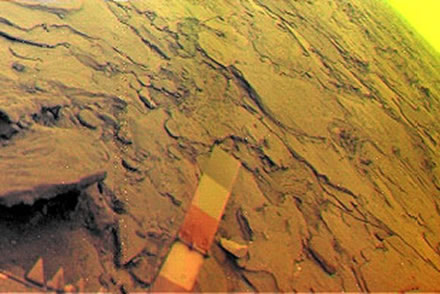 | |
The next images were taken by NASA Magellan and ESA Messenger orbiting spacecrafts using temperature sensitive instruments and radar reflecting imagers. The lower image represents elevation with darker and lighter colors. |
|
| 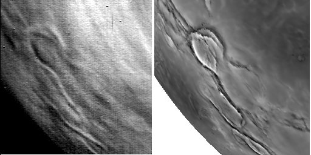 | |
| 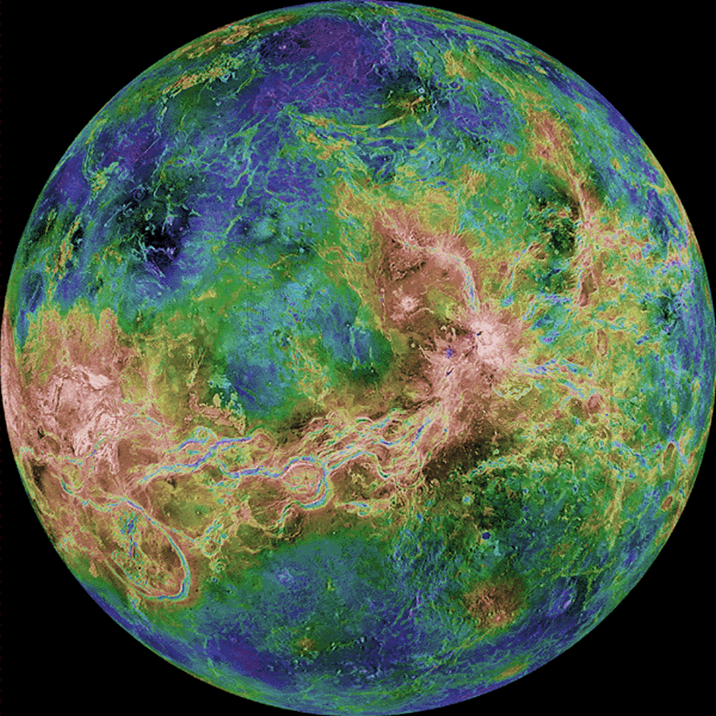 |